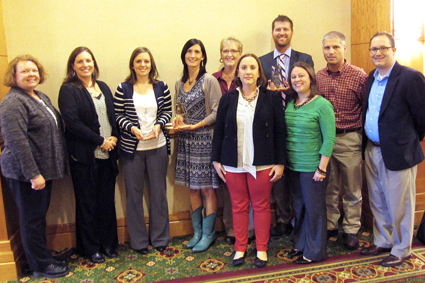
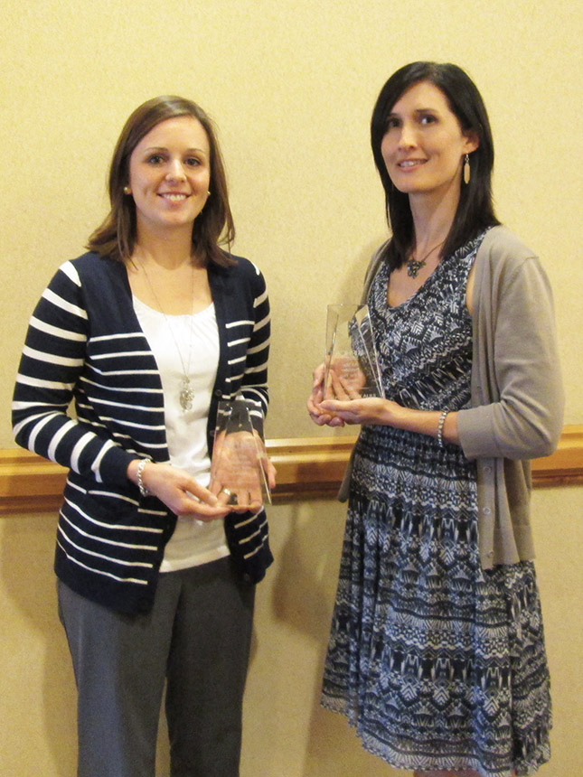

Health Center Wins Specialty Awards at Annual Conference
October 14, 2013
Vermillion-Parke Community Health Center (VPCHC) was recently awarded a Special Exemplary Project Award for their Mobile School-Based Health Center, All Star Provider of the Year Award, and All Star Employee of the Year Award at the annual Indiana Primary Health Care Association Conference, recently held in Indianapolis.
VPCHC received the Special Exemplary Project Award based on demonstrated excellence through advocacy, innovative programs, services, or systems that have increased access to care or improved health care services to the community, and collaborative efforts to reach high-risk populations in the community. These actions have been fulfilled through services and care provided by its Mobile School-Based Health Center.
Dr. Julia Wernz, Ph.D., HSPP, received the All Star Provider of the Year award, being recognized as an outstanding provider who has demonstrated excellence in clinical leadership through advocacy, innovative programs and services, as well as collaborative efforts to reach high-risk populations in the community. Dr. Wernz oversees VPCHC’s behavioral health department, which includes providing supervision to two behavioral health providers, resource coordinator, three community health workers and countless behavioral health students on rotation at VPCHC. Dr. Wernz also has a full caseload as a psychologist. Since joining VPCHC in 2008, Dr. Wernz has built a behavioral health program that sees over 750 patients and over 3,600 patient visits per year. Dr. Wernz is the first behavioral health provider to receive this award.
The All Star Employee of the Year award was awarded to Community Relations & Marketing Manager Amy Reed, for being recognized as a primary health care employee (non-practitioner) who has demonstrated excellence through patient advocacy, innovative programs, services, or systems and collaborative efforts. In her role, Reed works to educate the community about VPCHC and its services. When Reed joined VPCHC in 2009, the health center did not have any kind of marketing or community relations department. As such, she has worked to create her own department and develop a role that has become vital to VPCHC. Reed’s efforts have allowed VPCHC to reach more patients to educate them on the resources VPCHC can provide.
“On behalf of the VPCHC Board of Directors, congratulations to Dr. Wernz, Amy Reed, and VPCHC staff. It takes a team of very dedicated, well-rounded individuals willing to work together to make great strides in health care. The fact that VPCHC earned three of the seven awards that were given at the state conference demonstrates the comprehensive and quality of care available at VPCHC,” stated Becky Holbert, VPCHC Board President.
VPCHC is a Federally Qualified Health Center (FQHC) dedicated to providing comprehensive primary health care and related services for ALL individuals and families. VPCHC provides primary and preventive health care services, along with behavioral health services to the citizens of Vermillion and Parke counties, and surrounding communities.

IPHCA Awards: Pictured (L to R) Stephanie Jeffery, Quality Improvement Manager, Jill Wesco, VPCHC Board Secretary, Amy Reed, Community Relations & Marketing Manager, Dr. Julia Wernz, Behavioral Health Director/Psychologist, Dee Taylor, Executive Assistant, Elizabeth Burrows, CEO, Tiffani Martin, Director of Human Resources & Compliance, Eddie McFarland, COO, Dr. Eric Beachy, CMO, and T.J. Warren, CFO.

Amy Reed, Community Relations & Marketing Manager, and Dr. Julia Wernz, VPCHC Behavioral Health Director and Psychologist, received individuals award at the Indiana Primary Health Care Association Conference in October 2013. Reed received All Star Employee of the Year Award and Dr. Wernz received All Star Provider of the Year Award.